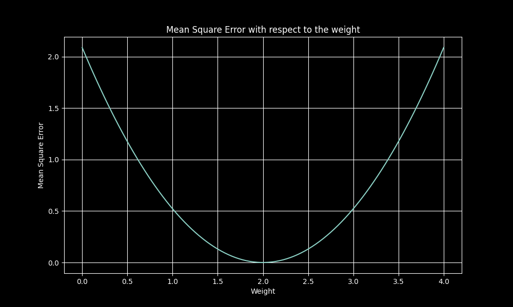
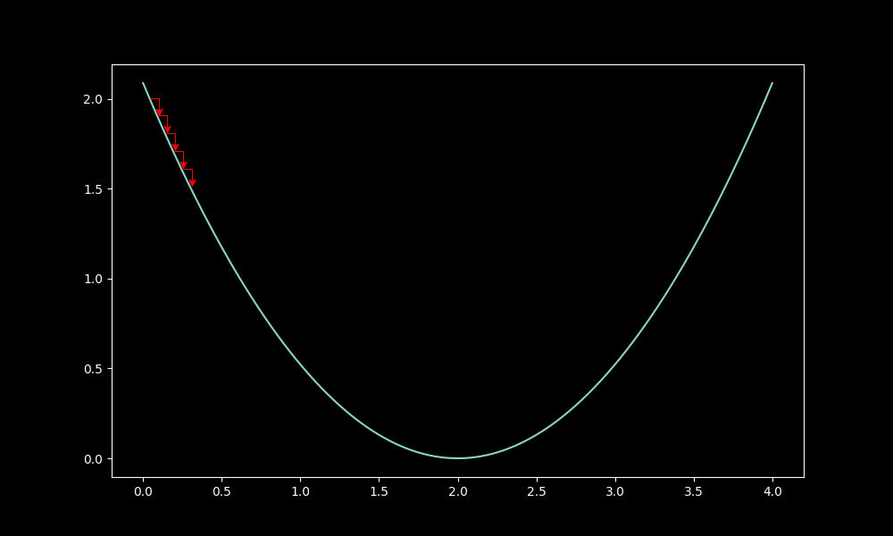
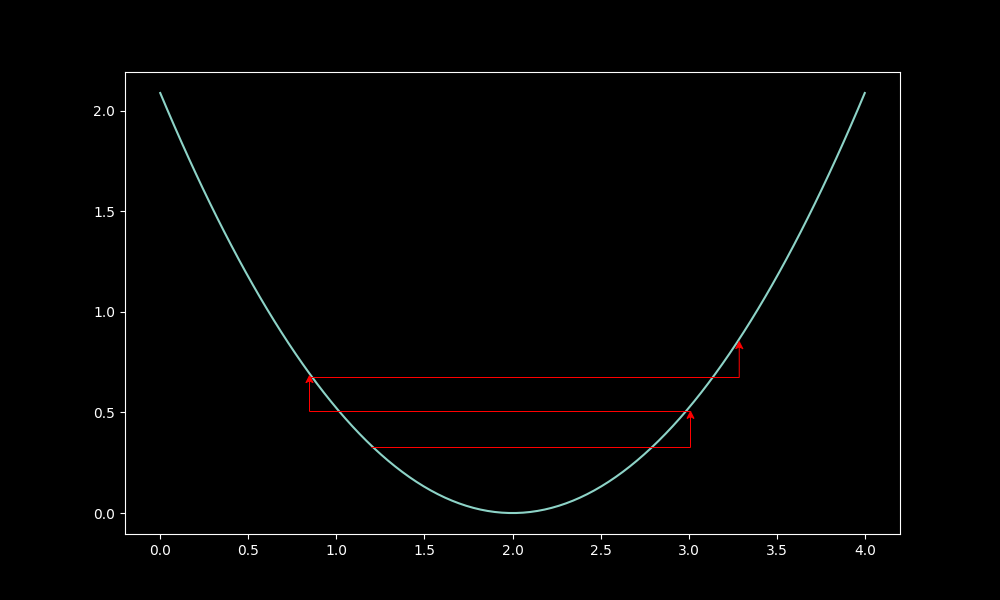

In the world of math, most things can be represented as a function, or simply input->eqn->output (Ex: y = 2x). Conceptually, many things in real life are also functions. Neural nets are universal approximations, by Universal approx. theorem, they can represent any continuous function, and so neural nets have many real-life approximations. Here's a NN trying to approximate a curve (Hello world sketch), from Emergent garden:
This is a neural net:
While that's oversimplified, a NN can be split into 3 separate parts: Input, Output, and Hidden.
The input layer is bascially a way to take in your input in a mathematical way,
Hidden layers, built with weights and biases (more on that later), are the main parts of a neural net, the neural net magic, taking the inputs, and transforming them with the values of the weights and biases to eventually reach an output
Output is the final layer, its activations and probabilities hold the answers the nn made,
In a linear layer, the NN can be simplified to one function:
$$y=mx+b$$, or in the case of Neural nets, $$y=wx+b$$
Here, y is the output layer, or output of the function, while x is the input layer, or input to the function. The Hidden layer transformation works through the values of w and b, the weights and biases.
Sample python code, with the function $$y=8x+3$$
import numpy as np
import matplotlib.pyplot as plt
x_v = [2,4]
# function vals
y_v = 8*x_v + 3
Now we have a simple dataset for the linear layer, [(2,19),(4,35)]. The linear layer has to now deal with changing w=8 and b=3 from that data
In the neural net, the values are initially random, before slowly getting closer and closer to the perfect
Python code for the linear layer:
np.random.seed(42)
w = np.random.randn()
b = np.random.randn()
def forward():
return w * x + b
y_hat = [forward(x) for x in x_v]
w: 0.4523 b: 0.6378
To get to the accurate values, we need two things
For regression, like this situation, we use MSE (Mean Squared Error) loss. MSE loss is defined as:
$$\text{MSE} = \frac{1}{n}\sum_{i=1}^{n}(y_i - \hat{y}_i)^2$$
Using this with a cost function, $$C = \frac{MSE}{2}$$ very useful when comparing parameters to error in MSE
A graph from Qtnx:

We can find the right way to go by looking at the loss, and what directions its increasing or decreasing in.
Calculate the gradients using the chain rule, or the backprop calculus,
With Loss L, and activation a, showing the chain rule for weights and biases
$$\frac{\partial C}{\partial w} = \frac{\partial C}{\partial a}\frac{\partial a}{\partial w}$$ $$\frac{\partial C}{\partial b} = \frac{\partial C}{\partial a}\frac{\partial a}{\partial b}$$
Updates the paramters with the LR(Learning Rate), between 1e-3 and 1e-5:
w -= grad(w)*lr
b -= grad(b)*lr
LR matters, shown in the qtnx graphs:
Low lr, proper drop:

High lr, wild drop:

Overall, the model trains in a couple steps and learns the exact regression.